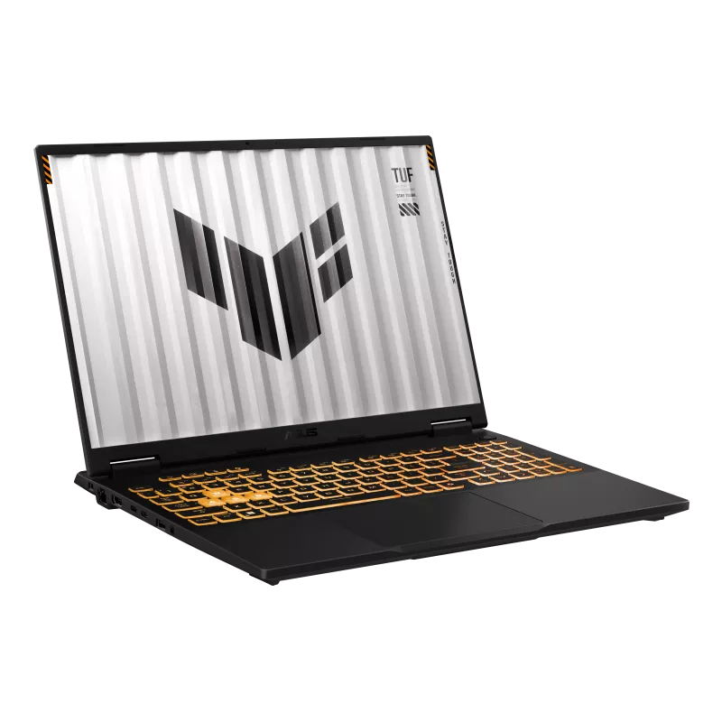

OVERVİEW
POWER , DURABİLİTY , PERFORMANCE
ASUS TUF Gaming F16 combines military-grade durability with powerful Intel and NVIDIA hardware for gamers and creators.



SPECS
Intel Core i5-13450HX — 10 çekirdek (4 verimlilik + 6 performans)
3.40 GHz taban / 4.60 GHz Turbo saat hızı
NVIDIA GeForce RTX 5050 115W
8GB GDDR7 bellek, 128-bit arayüz
40GB DDR5, 5600MHz
512GB PCIe 4.0 NVMe M.2 SSD
16" WUXGA (1920 x 1200), IPS panel
165Hz yenileme hızı, 300 nit, mat/yansımasız yüzey
İkili 84 bıçaklı Arc Flow Fan, 5 ısı borusu, 4 egzoz kanalı
İşlemcide sıvı metal termal macun
90 Wh, 4 hücreli Li-Ion
Wi-Fi 6E (802.11ax)
Bluetooth 5.3
3x USB 3.2 Gen 2 (10 Gbps)
2x USB Type-C (DisplayPort destekli)
HDMI 2.1 (FRL), RJ45 LAN
Dolby Atmos destekli hoparlör sistemi
Hi-Res sertifikalı kulaklık çıkışı
1080p kızılötesi (IR) webcam, gürültü engelleme
Tek bölgeli RGB arka aydınlatmalı klavye
Windows 11 Pro
MIL-STD-810H askeri sınıf dayanıklılık testleri
354 x 269 x 27.3 mm
2.20 kg
Mecha Gray (Koyu Gri)